추가 폰트 사용하기
다룰 이야기
R로 그린 플롯에서 우리는 기하학적인 요소로 데이터의 현황을 이해한다. 그런데 라벨이나 제목, 범례, 축의 구간 단위에 표현하는 텍스트도 데이터를 이해하는 데 중요한 역할을 한다. 플롯의 텍스트는 폰트로 그리는데, R에서의 폰트와 폰트를 시각화하는 매커니즘을 다룬다.
R로 데이터를 시각화하는 것은 참 쉽다. 영어를 사용하는 문화권의 분석가에 한해서다. 한글을 표현하고 싶거나, 한글이 포함된 플롯을 파일로 출력하는 것은 생각보다 쉽지 않다. 기본 폰트가 아닌 확장 폰트를 사용하는 것도 쉬운 작업은 아니다. 기본 환경 그대로 편하게 그릴 것이냐? 기본 환경을 확장해서 어렵게 그릴 것이냐?는 여러분의 수고가 확장된 플롯에서 얻는 효용보다 작을 때 고민하게 바란다.
dlookr
나는 데이터 시각화에서 한글을 사용하지 않는다. 데이터 분석에서의 데코레이션은 사치이기 때문이다. 그러나 플롯을 분석가가 아닌 일반 대중에서 설명하기 위함이나 단행본을 집필할 경우에는 예외적이지만 그래서 한글의 사용을 제한적으로 사용한다.
내가 개발한 dlook 패키지는 데이터의 진단과 EDA에 대한 전문 패키지라서 데이터의 시각화를 위한 여러 함수를 제공한다. 그러나 한글 지원에 인색하다. 국내 로컬용 패키지가 아닌 글로벌용 패키지인지라 한글에 대한 지원은 세 개의 레포트 출력 함수에 국한되어 있다.
“보기 좋은 떡이 먹기도 좋다.”라는 속담이 갑자기 생각난 것은 아니지만, 이제 dlookr 패키지로 생성한 플롯을 분석가가 아닌 일반 대중을 위한 플롯으로 확장할 때가 온 것 같다는 생각이 스쳤다. 그래서 기존 플롯을 ggplot2 패키지를 이용한 플롯으로 변경함과 동시에 출판을 염두에 둔 심미적인 요소를 가미하였다. 그리고 0.4.0 버전의 마이너 릴리즈로 배포하였다.
dlookr 0.3.X vs 0.4.0
dlookr 패키지의 0.3.14 버전과 0.4.0 버전의 몇 가지 시각화의 사례를 비교한다.
optimal binning
library(dlookr)
# Generate data for the example
carseats <- ISLR::Carseats
carseats[sample(seq(NROW(carseats)), 20), "Income"] <- NA
carseats[sample(seq(NROW(carseats)), 5), "Urban"] <- NA
# optimal binning using name
bin <- binning_by(carseats, US, Advertising)
bin## binned type: optimal
## number of bins: 3
## x
## [-1,0] (0,6] (6,29]
## 144 69 187# summary optimal_bins class
summary(bin)## ── Binning Table ──────────────────────── Several Metrics ──
## Bin CntRec CntPos CntNeg RatePos RateNeg Odds WoE IV JSD
## 1 [-1,0] 144 19 125 0.07364 0.88028 0.1520 -2.48101 2.00128 0.20093
## 2 (0,6] 69 54 15 0.20930 0.10563 3.6000 0.68380 0.07089 0.00869
## 3 (6,29] 187 185 2 0.71705 0.01408 92.5000 3.93008 2.76272 0.21861
## 4 Total 400 258 142 1.00000 1.00000 1.8169 NA 4.83489 0.42823
## AUC
## 1 0.03241
## 2 0.01883
## 3 0.00903
## 4 0.06028
##
## ── General Metrics ─────────────────────────────────────────
## ● Gini index : -0.87944
## ● IV (Jeffrey) : 4.83489
## ● JS (Jensen-Shannon) Divergence : 0.42823
## ● Kolmogorov-Smirnov Statistics : 0.80664
## ● HHI (Herfindahl-Hirschman Index) : 0.37791
## ● HHI (normalized) : 0.06687
## ● Cramer's V : 0.81863
##
## ── Significance Tests ──────────────────── Chisquare Test ──
## Bin A Bin B statistics p_value
## 1 [-1,0] (0,6] 87.67064 7.731349e-21
## 2 (0,6] (6,29] 34.73349 3.780706e-09optimal binning 클래스 bin을 시각화 한다.
# visualize all information for optimal_bins class
plot(bin)기존 0.3.14 버전에서는 다음과 같이 시각화된다.
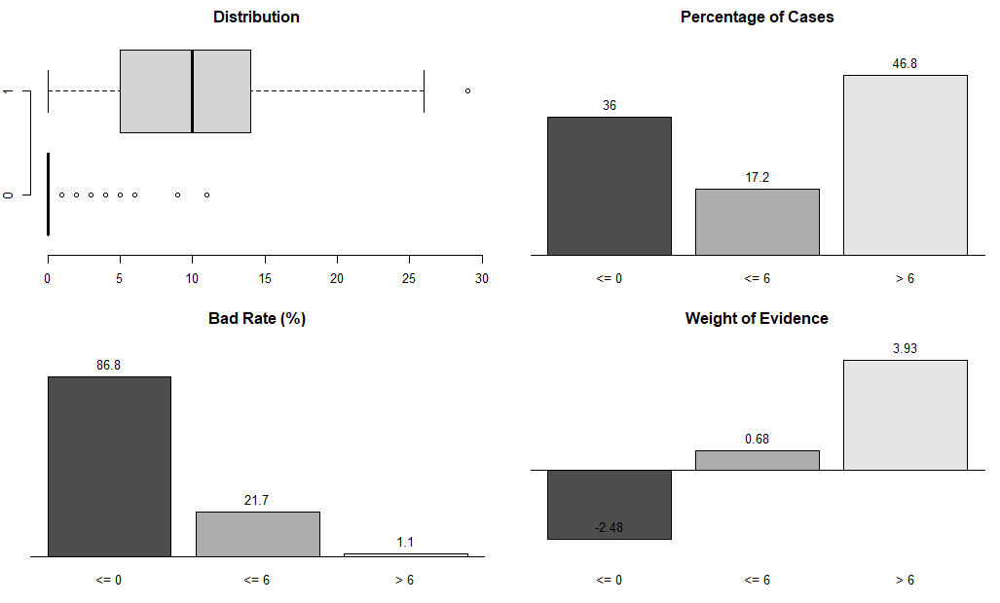
그러나 0.4.0 버전에서는 좀 더 깨끗하게 출력된다. 왼쪽 아래의 barchart도 Bad Rate에서 Percentage of Positive로 마이너하게 바꿨다.

이상치 분석
내친 김에 하나 더 비교해 보자.
다음 예제에서는 이상치 비율이 5% 이상인 수치변수를 찾은 다음 이상치의 평균을 전체 평균으로 나눈 결과를 내림차순으로 반환한다.
library(nycflights13)
library(dplyr)
diagnose_outlier(flights) %>%
filter(outliers_ratio > 5) %>%
mutate(rate = outliers_mean / with_mean) %>%
arrange(desc(rate)) %>%
select(-outliers_cnt)## # A tibble: 2 x 6
## variables outliers_ratio outliers_mean with_mean without_mean rate
## <chr> <dbl> <dbl> <dbl> <dbl> <dbl>
## 1 arr_delay 8.28 121. 6.90 -3.69 17.5
## 2 dep_delay 12.8 93.1 12.6 0.444 7.37그리고 그중 하나를 시각화한다.
flights %>%
plot_outlier(arr_delay)기존 0.3.14 버전에서는 다음과 같이 시각화된다.
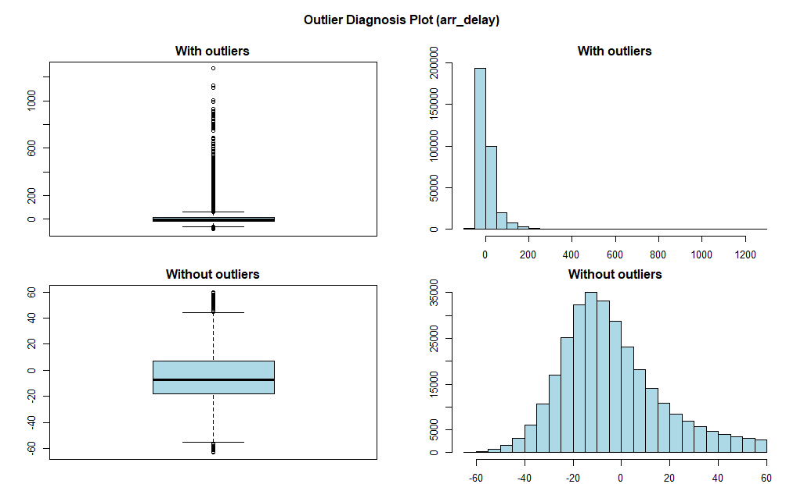
그러나 0.4.0 버전에서는 좀 더 깨끗하게 출력된다.

어떤가? 기존 플롯보다 많이 깔끔해졌다. 어떤 것이 달라졌는가?
내가 노안이 깊어진 것은 인정한다. 그래서 폰트의 크기를 키운 것은 아니다. 기하학의 도형 시각화 못지 않게 텍스트의 역할이 좀 더 커진 것이다. 상대적으로 기하학의 도형 시각화 공간이 줄어든 것은 사실이다.
또 어떤 것이 달라졌는가?
폰트 패밀리(font family)를 Arial Narrow로 변경했다. 글자 크리가 커진 반면 Arial Narrow 폰트로 출력되는 텍스트의 폭을 좀더 줄이면서, 텍스트도 좀 더 이쁘게 출력했다.
R의 폰트 체계
Arial Narrow 폰트로 시각화하는 것은 기존의 R 그래픽 환경을 수정해 주어야 한다. 이 작업은 R의 폰트 체계를 이해해야 한다.
R의 기본 폰트
세리프(serif)는 타이포그래피에서 글자의 획 일부 끝이 돌출된 모양을 의미한다. 그리고 세리프가 있는 글자체를 세리프체, 없는 글자체를 산세리프체(sans-serif)라 한다.
sans는 없음을 뜻하는 프랑스어의 접두어다. 세리프체는 명조체, 산세리프체는 고딕체(돋움체)를 연상하면 이해하기 쉽다.
R의 폰트 중에서 “sans”, “serif”, “mono”는 시스템(Windows, Linix, macOS) 독립적이라, 공통적으로 사용할 수 있다. 그 중 산세리프체인 “sans”가 기본 폰트다. “serif”는 세리프체이며, “mono”는 모노스페이스(monospace)체다. 이 폰트체는 모든 공백문자를 포함한 모든 글자/문자의 너비가 같다. 즉, 알파벳 i와 G의 너비가 같은 고정폭 폰트체다.
엄밀하게 말하자면, “sans”, “serif”, “mono”는 폰트가 아니라 폰트 유형을 의미한다. 고딕, 명조, 고정폭 폰트며, 크로스플랫폼(cross-platform) 하에서 운용하기 위해 추상화 해 놓은 폰트 이름이다. 실제로는 운영체제(operating system)에서 추상화한 폰트 이름에 매핑된 실제 폰트가 사용된다. 그러므로 시각화에 표현되는 텍스트의 모양은 운영체제와 사용자의 환경에 따라 다를 수 있다.
다음의 명령을 MS Windows, Linix, macOS 환경에서 수행해 보았다.
plot(1:8, 1:8, type = "n", bty = "n", xaxt = "n", yaxt = "n",
xlab = "", ylab = "", pty = "s", mar = c(0, 0, 0, 0))
text(2, 7, "Font Test : English, sans", adj = 0, cex = 2, family = "sans")
text(2, 6, "Font Test : English, serif", adj = 0, cex = 2, family = "serif")
text(2, 5, "Font Test : English, mono", adj = 0, cex = 2, family = "mono")
text(2, 4, "폰트 테스트 : 한글, sans", adj = 0, cex = 2, family = "sans")
text(2, 3, "폰트 테스트 : 한글, serif", adj = 0, cex = 2, family = "serif")
text(2, 2, "폰트 테스트 : 한글, mono", adj = 0, cex = 2, family = "mono")MS Windows에서는 다음과 같은 결과를 얻는다.
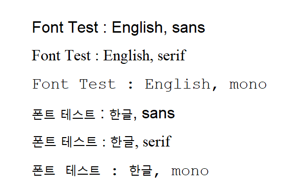
결과를 보면, 한글의 경우에는 “sans”, “serif”, “mono”가 같은 폰트로 보인다. 버전에 따라 차이가 있지만, 최근에 사용되는 버전의 MS Windows에서는 영문 폰트로 지정한 한글의 경우 맑은 고딕이 기본으로 설정되어 출력된다.
MS Windows에서만 지원하는 windowsFonts() 함수로 R에서 사용할 수 있는 기본 폰트를 조회했다. “sans”는 Arial, “serif”는 Times New Roman, “mono”는 Courier New 폰트로 매핑되어 있음을 알 수 있다. 그러므로 넷째 줄에 출력된 한글 폰트 테스트는 “sans”에 해당하는 Arial 폰트를 사용하는데, Arial 폰트는 영문 폰트라 한글 글리프(Glyph)가 정의되어 있지 않다. 그러므로 맑은 고딕 폰트의 글리프를 가져다 출력하는 것이다.
글리프(Glyph)는 폰트에서 글자나 문자 한 자 한 자의 모양을 정의한 자형(字形)을 의미한다. 즉, 시각적인 문자의 표현이다.
> windowsFonts()
$serif
[1] "TT Times New Roman"
$sans
[1] "TT Arial"
$mono
[1] "TT Courier New"Linux에서는 다음과 같은 결과를 얻는다.
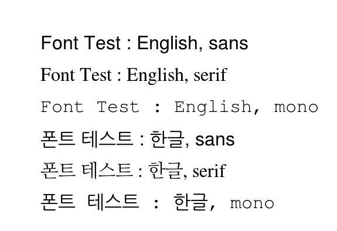
얼핏 보아도 세리프와 산세리프의 모양이 다른 것을 알 수 있다. 나의 CentOS Linux 도커 환경에서, X11Fonts() 함수로 R에서 사용할 수 있는 기본 폰트를 조회했다. “sans”는 helvetica, “serif”는 times, “mono”는 courier 폰트로 매핑되어 있음을 알 수 있다.
> X11Fonts()
$serif
[1] "-*-times-%s-%s-*-*-%d-*-*-*-*-*-*-*"
$sans
[1] "-*-helvetica-%s-%s-*-*-%d-*-*-*-*-*-*-*"
$mono
[1] "-*-courier-%s-%s-*-*-%d-*-*-*-*-*-*-*"
$Times
[1] "-adobe-times-%s-%s-*-*-%d-*-*-*-*-*-*-*"
$Helvetica
[1] "-adobe-helvetica-%s-%s-*-*-%d-*-*-*-*-*-*-*"
$CyrTimes
[1] "-cronyx-times-%s-%s-*-*-%d-*-*-*-*-*-*-*"
$CyrHelvetica
[1] "-cronyx-helvetica-%s-%s-*-*-%d-*-*-*-*-*-*-*"
$Arial
[1] "-monotype-arial-%s-%s-*-*-%d-*-*-*-*-*-*-*"
$Mincho
[1] "-*-mincho-%s-%s-*-*-%d-*-*-*-*-*-*-*"“sans”, “serif”, “mono”별로 어떤 한글 폰트가 매핑되어 있는지 살펴본다.
/etc/fonts/conf.d 디렉토리의 40-nonlatin.conf, 65-nonlatin.conf 파일에는 라틴계열이 언어가 아닌 비영어권의 폰트 설정이 정의되어 있다. 65-nonlatin.conf 파일을 열어 “sans”, “serif”, “mono”별로 매핑된 한글 폰트 목록을 조회해 보았다. “serif”는 NanumMyeongjo, UnBatang, Baekmuk Batang, 즉, 나눔명조, 은바탕, 백묵바탕 순으로 매핑되어 있다. 그러므로 나눔명조 폰트가 출력된 것이다. “sans”는 NanumGothic, UnDotum, Baekmuk Gulim, 즉, 나눔고딕, 은돋움, 백묵돋움, 백묵굴림 순으로 매핑되어 있다. 그러므로 나눔고딕 폰트가 출력된 것이다. 마찬가지로 “mono”는 나눔고딕코딩 폰트가 출력되었다.
[root@9ead55835a3e conf.d]# pwd
/etc/fonts/conf.d
[root@9ead55835a3e conf.d]# grep "serif\|mono\|ko" 65-nonlatin.conf
<family>serif</family>
<family>NanumMyeongjo</family> <!-- hangul (ko) -->
<family>UnBatang</family> <!-- hangul (ko) -->
<family>Baekmuk Batang</family> <!-- hangul (ko) -->
<family>sans-serif</family>
<family>NanumGothic</family> <!-- hangul (ko) -->
<family>UnDotum</family> <!-- hangul (ko) -->
<family>Baekmuk Dotum</family> <!-- hangul (ko) -->
<family>Baekmuk Gulim</family> <!-- hangul (ko) -->
<family>monospace</family>
<family>NanumGothicCoding</family> <!-- hangul (ko) -->
<family>NanumGothic</family> <!-- hangul (ko) -->
<family>UnDotum</family> <!-- hangul (ko) -->
<family>Baekmuk Dotum</family> <!-- hangul (ko) -->
<family>Baekmuk Gulim</family> <!-- hangul (ko) -->
[root@9ead55835a3e conf.d]# macOS에서는 다음과 같은 결과를 얻는다.
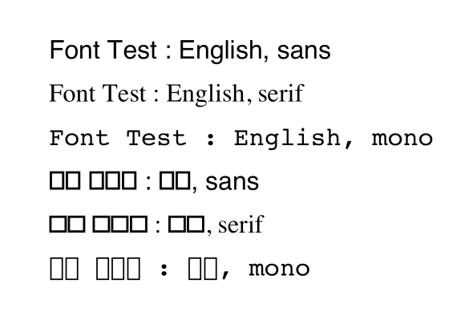
다른 운영체제와 달리 macOS에서는 한글이 출력되지 않았다. 이것이 다른 운영체제와 다른 macOS 운영체제에서의 R의 특징이다. 그러나 quartzFonts() 함수로 영문의 경우에는 “sans”는 Helvetica, “serif”는 Times-Roman, “mono”는 Courier 폰트로 매핑되어 있음을 알 수 있다.
주) 이 글은 일부 Linux와 MS Windows 환경에서 실행한 결과를 포함하지만, 전체적으로는 macOS 운영체제에서 테스트되고 기술하였음을 미리 알려 둔다. 그러나 다른 운영체제에서도 어렵지 않게 수행할 수 있을 것이다.
> quartzFonts()
$serif
[1] "Times-Roman" "Times-Bold" "Times-Italic" "Times-BoldItalic"
$sans
[1] "Helvetica" "Helvetica-Bold" "Helvetica-Oblique" "Helvetica-BoldOblique"
$mono
[1] "Courier" "Courier-Bold" "Courier-Oblique" "Courier-BoldOblique"macOS에서는 한글 기본 폰트를 설정하기 위해서는 다음처럼 quartzFont(), quartzFonts() 함수를 사용한다. 물론 다른 운영체제에서도 가능하다. 다만, MS Windows에서는 windowsFont(), windowsFonts() 함수를, Linux에서는 X11Font(), X11Fonts() 함수를 이용하면 된다.
다음 예제는 “sans”, “serif”, “mono”별로 애플고딕, 애플명조, 나눔고딕코딩 폰트를 매핑한다. 그런데 이번에는 영문 폰트가 기존의 것과 다르다. 그 이유는 한글 폰트는 영문 글리프도 정의했기 때문이다. 영문 글리프의 개수는 한글에 비에 매우 적기 때문에, 대부분의 한글 폰트는 영문 글리프도 함께 정의한다. 그 이유는 한글과 영문을 혼용할 때 좀더 잘 어울리도록 영문 글리프를 새로이 정의하기 때문이다.
quartzFonts(sans = quartzFont(rep("AppleGothic", 4)),
serif = quartzFont(rep("AppleMyungjo", 4)),
mono = quartzFont(c("D2Coding", "D2CodingBold", "D2Coding", "D2CodingBold")))
plot(1:8, 1:8, type = "n", bty = "n", xaxt = "n", yaxt = "n",
xlab = "", ylab = "", pty = "s", mar = c(0, 0, 0, 0))
text(2, 7, "Font Test : English, sans", adj = 0, cex = 2, family = "sans")
text(2, 6, "Font Test : English, serif", adj = 0, cex = 2, family = "serif")
text(2, 5, "Font Test : English, mono", adj = 0, cex = 2, family = "mono")
text(2, 4, "폰트 테스트 : 한글, sans", adj = 0, cex = 2, family = "sans")
text(2, 3, "폰트 테스트 : 한글, serif", adj = 0, cex = 2, family = "serif")
text(2, 2, "폰트 테스트 : 한글, mono", adj = 0, cex = 2, family = "mono")폰트의 매핑을 변경하고 출력한 결과를 보니, 한글이 정상적으로 출력되었다.
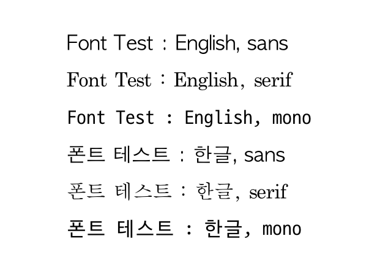
예제에서는 폰트 매커니즘을 설명하기 위해서 기본 폰트인 “sans”, “serif”, “mono”를 변경하였다. 그러나 이를 변경할 경우에 어떤 side-effect를 발생할 지 모르니 수정하지 않는 것을 권장한다. 그래서 앞서 바꾼 설정을 다시 돌려 놓아야 한다.
quartzFonts(sans = quartzFont(c("Helvetica", "Helvetica-Bold", "Helvetica-Oblique", "Helvetica-BoldOblique")),
serif = quartzFont(c("Times-Roman", "Times-Bold", "Times-Italic", "Times-BoldItalic")),
mono = quartzFont(c("Courier", "Courier-Bold", "Courier-Oblique", "Courier-BoldOblique")))폰트 패밀리와 폰트 페이스
폰트 패밀리(font family)는 폰트의 고유한 특징을 유지하면서 파생된 폰트들의 집합이다. 대표적으로 글자의 굵기에 따라 기본체(Regular), 굵은체(Bold), 가는체(Light)로 나눌 수 있으며, 기울어진 모양의 이탤릭체(Italic) 등이 폰트 패밀리다.
배포되는 폰트에 따라서 여러 유형의 폰트를 정의한다. 그러나 R은 폰트 패밀리에 다음과 같은 4개의 폰트만 지원한다. 그러므로 4개를 초과하는 폰트를 가진 폰트 패밀리라도 오직 4가지만 사용할 수 있다. 그리고 이것을 폰트 페이스(font faces)라 부른다.
- Regular : 기본 폰트체
- Bold : 굵은체
- Italic : 이탤릭체
- BoldItalic : 굵은 이탤릭체
quartzFont() 함수에서 인수로 사용한 4개의 텍스트가 바로 Regular, Bold, Italic, BoldItalic을 의미한다. 애플고딕 폰트는 오직 기본 폰트체만 배포하기 때문에 모두 동일한 폰트를 지정했다. 그리고 D2Coding 폰트는 기본체와 굵은체 두 가지만 배포하기 때문에 이탤릭체에 두 개를 반복 지정한 것이다.
다음의 Raleway 폰트 패밀리는 18개의 폰트를 포함하고 있다. 그러나 이 폰트 패밀리도 R에서는 4개 밖에 사용할 수 없다.
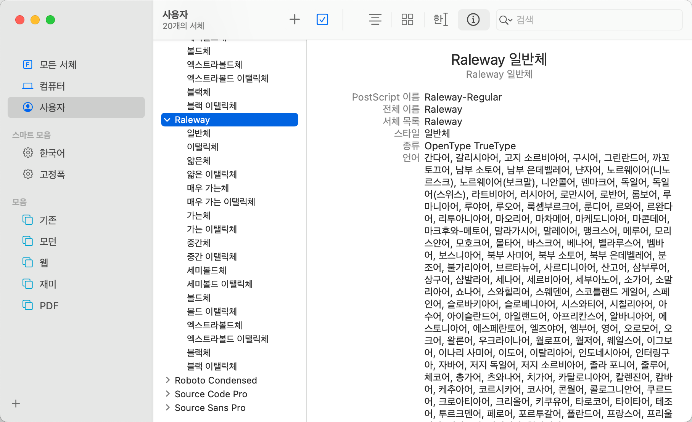
Raleway 폰트 패밀리의 폰트들은 572개 혹은 672개의 글리프로 정의되어 있는 반면에, 나눔고딕 Bold는 20,452개의 글리프로 구성되어 있다. 글리프의 개수가 적은 라틴문자 계열의 폰트는 이처럼 많은 유형의 폰트를 개발할 수 있는 여력이 있다는 장점이 있다.
대부분의 한글 폰트 패밀리는 이탤릭체나 굵은이탤릭체를 정의하지 않는다. 그 이유는 이탤릭체의 사용 빈도가 그리 높지 않기 때문이다. 경제성의 논리다. MS 오피스에서는 기본체(Regular)만 있더라도 애뮬레이터하여, 굵은체, 이탤릭체, 굵은이탤릭체를 표현하지만, R에서는 폰트 패밀리에서 제공하는 폰트 페이스(스타일)만 지원한다.
폰트 패밀리에서 제공하는 여러 폰트 페이스를 사용하기 위해서는 운영체제별로 quartzFont(), quartzFonts() 함수, windowsFont(), windowsFonts() 함수, X11Font(), X11Fonts() 함수를 이용해서 폰트 패밀리와 폰트 페이스를 정의해야 한다. 그렇지 않으면 오직 기본체(Regular)만 사용할 수 있다.
quartzFonts(d2code = quartzFont(c("D2Coding", "D2CodingBold", "D2Coding", "D2CodingBold")))
par(mar = c(0, 0, 0, 0))
plot(1:10, 1:10, type = "n", bty = "n", xaxt = "n", yaxt = "n",
xlab = "", ylab = "", pty = "s", mar = c(0, 0, 0, 0))
text(2, 9, "Font Test : English, regular", adj = 0, cex = 2, family = "sans", font = 1)
text(2, 8, "Font Test : English, bold", adj = 0, cex = 2, family = "sans", font = 2)
text(2, 7, "Font Test : English, italic", adj = 0, cex = 2, family = "sans", font = 3)
text(2, 6, "Font Test : English, bold italic", adj = 0, cex = 2, family = "sans", font = 4)
text(2, 5, "폰트 테스트 : 한글, regular", adj = 0, cex = 2, family = "d2code", font = 1)
text(2, 4, "폰트 테스트 : 한글, bold", adj = 0, cex = 2, family = "d2code", font = 2)
text(2, 3, "폰트 테스트 : 한글, italic", adj = 0, cex = 2, family = "d2code", font = 3)
text(2, 2, "폰트 테스트 : 한글, bold italic", adj = 0, cex = 2, family = "d2code", font = 4)
영문은 sans 폰트로 4개의 폰트 페이스를 표현하지만, 한글 D2Coding폰트는 이탤릭 계열의 페이스를 지원하지 못하였다. 그 이유는 D2Coding 폰트는 이탤릭 계열의 폰트를 배포하지 않았기 때문이다.
R에서 폰트 인식하기
폰트와 폰트 패밀리의 이름을 알면 R에서 여러 서체로 텍스트를 꾸밀 수 있다. 그러나 우리는 폰트와 폰트 패밀리의 이름을 모두 외울 수도 없고, 정확한 이름을 찾기도 간단치 않다. 앞서 사용한 애플고딕, 애플명조, D2Coding은 서체 관리자에서 조회해서 알아낸 것이다.
extrafont 패키지의 font_import() 함수는 사용자 시스템에 설치된 트루타입(TrueType) 폰트를 읽어서 R에서 사용할 수 있도록 폰트의 이름과 폰트의 페이스를 등록해 준다. extrafont 패키지는 폰트 정보를 읽어 extrafontdb 패키지에 폰트 데이터베이스를 생성한다. 그리고 폰트 데이터베이스를 통해서 폰트를 쉽게 가져다 쓸 수 있게 도와준다.
나눔고딕 폰트 정보를 가져오는 예제다. “NanumGothic”에 매치되는 폰트를 가져온다. 만약 pattern 인수를 사용하지 않으면 모든 트루타입 폰트를 가져오느라 시간이 걸릴 것이다. 그래서 나눔고딕 폰트만 가져오려는 것이다. 그런데 font_import() 함수가 정규표현식을 완전하게 지원하지 않아서, 나눔고딕코딩 폰트를 제외하고 가져올 방법이 없었다.
font_import() 함수의 pattern 인수는 폰트 이름이 아니라, 폰트 파일 이름의 패턴을 검색한다. 예를 들면 MS Windows에서는Arial Narrow는 검색되지 않을 것이다. 그 이유는 MS Windows에서는Arial Narrow폰트의 파일 이름은 “ARIALN”로 표현되기 때문이다. 그러므로 폰트의 파일 이름을 인지하는 것이 필요하다. 아니면 시간이 걸리더라도 pattern 인수를 사용하지 않고, 모든 폰트를 읽어들이는 방법도 고려할 수 있다.
library(extrafont)
# 사용자 및 시스템 폰트 디렉토리에서 폰트 가져와 등록하기
font_import(pattern = "NanumGothic", prompt = FALSE)extrafontdb 패키지에 등록된 폰트 데이터베이스는 extrafont 패키지의 fonttable() 함수로 조회할 수 있다.
library(dplyr)
library(extrafont)## Registering fonts with Rfonttable() %>%
filter(stringr::str_detect(FamilyName, "NanumGothic"))## package afmfile
## 1 NA NanumGothic.afm.gz
## 2 NA NanumGothicBold.afm.gz
## 3 NA NanumGothicCoding.afm.gz
## 4 NA NanumGothicCoding-Bold.afm.gz
## 5 NA NanumGothicLight.afm.gz
## fontfile
## 1 /Users/choonghyunryu/Library/Fonts/NanumGothic.ttf
## 2 /Users/choonghyunryu/Library/Fonts/NanumGothicBold.ttf
## 3 /Users/choonghyunryu/Library/Fonts/NanumGothicCoding.ttf
## 4 /Users/choonghyunryu/Library/Fonts/NanumGothicCoding-Bold.ttf
## 5 /Users/choonghyunryu/Library/Fonts/NanumGothicLight.ttf
## FullName FamilyName FontName Bold Italic
## 1 NanumGothic NanumGothic NanumGothic FALSE FALSE
## 2 NanumGothicBold NanumGothic NanumGothicBold TRUE FALSE
## 3 NanumGothicCoding NanumGothicCoding NanumGothicCoding FALSE FALSE
## 4 NanumGothicCoding Bold NanumGothicCoding NanumGothicCoding-Bold TRUE FALSE
## 5 NanumGothic Light NanumGothic Light NanumGothicLight FALSE FALSE
## Symbol afmsymfile
## 1 FALSE NA
## 2 FALSE NA
## 3 FALSE NA
## 4 FALSE NA
## 5 FALSE NA역시 나눔고딕코딩 폰트 정보도 가져왔다. 그래서 정규표현이 잘 지원되는 str_detect() 함수로 나눔고딕 정보만 조회한다. R에서 지원하지 않는 폰트 페이스인 Light는 폰트이름과 같은 폰트 패밀리로 등록되었고, Regular와 Bold가 NanumGothic 폰트 패밀리도 등록되었다. Bold 변수, Italic 변수로 폰트 페이스를 구분한다.
fonttable() %>%
filter(stringr::str_detect(FamilyName, "NanumGothic(?!Coding)")) %>%
select(FamilyName:Italic)## FamilyName FontName Bold Italic
## 1 NanumGothic NanumGothic FALSE FALSE
## 2 NanumGothic NanumGothicBold TRUE FALSE
## 3 NanumGothic Light NanumGothicLight FALSE FALSE이 결과는 다음 스크립트와 동일한 역할을 수행한다.
quartzFonts(NanumGothic = quartzFont(c("NanumGothic", "NanumGothicBold", "NanumGothic", "NanumGothicBold")))Linux와 macOS에서는 정확한 폰트의 이름만 알면, text() 함수의 family 인수처럼 기본 폰트를 변경할 수 있다. 그러나 MS Windows에서는 windowsFont(), windowsFonts() 함수로 Window 디바이스에서 폰트를 인식할 수 있도록 R에게 알려 주어야 한다. font_import() 함수가 모든 것을 해결해 주지 않는다.
비트맵 아키텍처를 사용하는 MS Windows 환경에서는 font_import() 함수를 수행한 후에, 추가로 다음 스크립트를 수행해야 해당 폰트를 사용할 수 있다. loadfonts() 함수는 windowsFont(), windowsFonts() 함수의 사용을 쉽게 해주는 역할을 한다.
loadfonts(device = "win", quiet = TRUE)extrafont::font_import() 함수는 한번만 수행하면 해당 폰트가 등록되며, extrafont::loadfonts() 함수는 R 세션마다 매번 수행해야 한다. MS Windows 사용자는 주의해야 할 부분이다.
그래픽 전역변수에 폰트 패밀리 지정하기
앞의 작업은 한글 출력을 위한 완벽한 작업은 아니다. 폰트 패밀리에 한글 폰트를 매핑한 것에 지나지 않는다. 그러므로 폰트를 사용하기 위해서는 text()와 같은 저수준 그래픽 함수(low level graphics function)를 사용할때마다 폰트 패밀리를 지정해야 한다. 매우 번거로운 작업이다. 그래서 par() 함수로 그래픽 전역변수에 폰트 패밀리를 등록한다.
특히 macOS 환경에서 모든 한글이 포함되는 플롯을 그리는 작업에서 한글을 정상적으로 출력하기 위해서는 전역 그래픽 환경변수에 폰트 패밀리(font family)를 설정해 주어야 한다.
애플명조를 사용하고 싶다면 다음처럼 par() 함수로 폰트 패밀리에 AppleMyungjo를 지정한다. par() 함수로 설정된 환경변수는 전역변수이기 때문에 R 세션이 종료될 때까지 설정이 유지된다. 즉, R을 종료할 때까지 모든 텍스트는 애플명조 폰트를 사용한다. 다만, 예제의 text() 함수처럼 폰트 패밀리를 지정할 수 있는 인수를 지원한다면, “Courier”나 “NanumGothic” 폰트를 사용할 수도 있다.
par(family = "AppleMyungjo", mar = c(0, 0, 0, 0))
plot(1:8, 1:8, type = "n", bty = "n", xaxt = "n", yaxt = "n",
xlab = "", ylab = "", pty = "s", mar = c(0, 0, 0, 0))
text(2, 7, "Font Test : English", adj = 0, cex = 2)
text(2, 6, "Font Test : English", adj = 0, cex = 2)
text(2, 5, "Font Test : English", adj = 0, cex = 2, family = "Courier")
text(2, 4, "폰트 테스트 : 한글", adj = 0, cex = 2)
text(2, 3, "폰트 테스트 : 한글", adj = 0, cex = 2)
text(2, 2, "폰트 테스트 : 한글", adj = 0, cex = 2, family = "NanumGothic")
다음은 시스템 폰트 디렉토리에 있는 사용자가 설치한 나눔고딕 폰트로 플롯을 출력한다.
# 전역 그래픽 환경변수의 폰트 패밀리에 시스템 폰트 디렉토리에 있는 폰트 패밀리 지정
par(family = "NanumGothic")
plot(rnorm(100), type = "b", pch = 16, main = list("정규난수의 플로팅 Test", cex = 2))
# 전역 그래픽 환경변수의 폰트 패밀리에 시스템 폰트 디렉토리에 없는 폰트 패밀리 지정
# 폰트 패밀리 이름을 정확하게 입력해야 한다.
par(family = "NanumGothic123")
plot(rnorm(100), type = "b", pch = 16, main = list("정규난수의 플로팅 Test", cex = 2))
마지막 예제처럼 폰트 혹은 폰트 패밀리의 이름을 오타로 잘못 기술하거나, 없는 폰트 패밀리의 이름을 기술하면 다음처럼 경고와 함께 모든 텍스트는 출력되지 않는다. 물론 “NanumGothic”라는 폰트 패밀리는 나의 macOS R 환경에는 존재하지 않는다.
> warnings() %>% head(n = 3)
Warning messages:
1: In doTryCatch(return(expr), name, parentenv, handler) :
no font could be found for family "NanumGothic123"
2: In doTryCatch(return(expr), name, parentenv, handler) :
no font could be found for family "NanumGothic123"
3: In doTryCatch(return(expr), name, parentenv, handler) :
no font could be found for family "NanumGothic123"ggplot2에서의 폰트의 사용
ggplot2는 R 그래픽의 전역 변수와는 다른 매커니즘이다. 그 근간은 R 그래픽를 따르지만, 독립된 환경을 구사한다. 그러므로 par() 함수로 폰트 패밀리를 지원할 수 없다.
library(ggplot2)
par(family = "NanumGothic")
ggplot(mpg, aes(class)) +
geom_bar(fill = "steelblue", alpha = 0.5) +
labs(title = "차량 클래스별 도수", y = "도수") +
theme(plot.title = element_text(size = 20))
결과 플롯을 보면 한글 폰트인 나눔고딕 폰트가 적용되지 못했다. ggplot2 플롯은 테마에서 폰트 관련 설정을 정의한다. 그래서 ggplot의 기본 테마인 theme_gray 테마의 base_family로 폰트 패밀리를 지정해야 한다.
ggplot(mpg, aes(class)) +
geom_bar(fill = "steelblue", alpha = 0.5) +
labs(title = "차량 클래스별 도수", y = "도수") +
theme_gray(base_family = "NanumGothic")
theme_gray 테마의 base_family 설정은 모든 텍스트 요소에 일괄적으로 적용된다. 메인 타이틀과 y-축 라벨의 폰트 패밀리를 달리 지정할 수 있을까? 개별 텍스트 요소에 다른 설정을 적용하기 위해서는 theme() 함수를 사용한다.
다음은 theme() 함수로 메인 타이틀은 앞에서 “mono”에 매핑한 D2Coding 폰트의 굵은 폰트를 y-축 라벨은 나눔고딕 폰트를 지정한다. 그리고 폰트의 크기도 기본 설정에서 변경하였다.
ggplot(mpg, aes(class)) +
geom_bar(fill = "steelblue", alpha = 0.5) +
labs(title = "차량 클래스별 도수", y = "도수") +
theme(plot.title = element_text(family = "d2code", size = 20, face = 2),
axis.title.y = element_text(family = "NanumGothic", size = 12))
ggplot에서도 par() 함수처럼 폰트 설정을 전역변수로 설정하는 방법이 없을까? 매번 플롯을 그릴 때마 폰트 패밀리를 지정해야 할까?
theme_set() 함수로 par() 함수처럼 ggplot의 그래픽 환경을 설정할 수 있다.
theme_set(theme_gray(base_family = "NanumGothic"))
ggplot(mpg, aes(class)) +
geom_bar(fill = "steelblue", alpha = 0.5) +
labs(title = "차량 클래스별 도수", y = "도수") 
이전에 theme_set() 함수로 폰트 패밀리를 지정했기 때문에 한글이 나눔고딕체로 정상 출력된다.
ggplot(mpg, aes(class, hwy, fill = class)) +
geom_boxplot(alpha = 0.5) +
labs(title = "차량 클래스별 연비", y = "연비 (highway miles per gallon)") +
theme(legend.position = "none")
PDF 디바이스
그래픽 디바이스
R의 그래픽 디바이스(graphics devices)는 플롯이 출력되는 모든 대상을 의미한다. 앞에서 다룬 MS Windows의 windows, Linux(UNIX-like)의 X11, macOS의 quartz는 각각의 운영체제에서의 그래픽 윈도우를 의미한다. 즉, 기본적으로 플롯이 출력되는 화면이다. 이것은 R의 그래픽 디바이스다.
프린터나, 메타파일, PNG, JPEG, BMP, TIFF와 같은 비트맵(bitmap) 포맷의 그래픽 파일도 그래픽 디바이스다. 또한 SVG(Scalar Vector Graphics), PDF, PostScript 파일도 그래픽 디바이스다.
PDF 파일로 플롯 내보내기
PNG, JPEG, BMP, TIFF와 같은 비트맵 포맷의 파일로 윈도우에 표시된 플롯을 내보내는 방법은 쉽기도 하지만 텍스트 표현에 특별한 이슈가 없다. 그 이유는 윈도우에 표시된 플롯을 비트맵 형식으로 전환하기 때문에, 윈도우에 이상 없이 출력된 플롯은 모두 파일로 출력이 가능하다.
그러나 PostScript 파일, 특히 PDF 파일의 매커니즘은 비트맵 형식의 그래픽 파일과는 다르다. 이 파일 포맷은 폰트로 텍스트를 표현하기 때문에 해당 그래픽 디바이스에 없는 폰트로 만들어진 플롯을 출력할 경우는 다음과 같은 에러가 발생한다.
pdf("mpg.pdf")
ggplot(mpg, aes(class)) +
geom_bar(fill = "steelblue", alpha = 0.5) +
labs(title = "차량 클래스별 도수", y = "도수") +
theme_gray(base_family = "NanumGothic")
dev.off()Error in grid.Call.graphics(C_text, as.graphicsAnnot(x$label), x$x, x$y, :
invalid font type
In addition: There were 50 or more warnings (use warnings() to see the first 50)> warnings() %>% head(n = 3)
Warning messages:
1: In grid.Call(C_stringMetric, as.graphicsAnnot(x$label)) :
font family 'NanumGothic' not found in PostScript font database
2: In grid.Call(C_stringMetric, as.graphicsAnnot(x$label)) :
font family 'NanumGothic' not found in PostScript font database
3: In grid.Call(C_stringMetric, as.graphicsAnnot(x$label)) :
font family 'NanumGothic' not found in PostScript font databasePDF 디바이스 기본 폰트
PDF 디바이스의 기본 폰트는 다음과 같다. 여기서 한글은 "Korea1"과 "Korea1deb" 두 개다. 일본어 폰트와 중국어 폰트도 보인다. 또한 이들 폰트들은 비상업용 폰트로 폰트 라이선스에서 자유롭다.
library(dplyr)
pdfFonts() %>% names()## [1] "serif" "sans" "mono"
## [4] "AvantGarde" "Bookman" "Courier"
## [7] "Helvetica" "Helvetica-Narrow" "NewCenturySchoolbook"
## [10] "Palatino" "Times" "URWGothic"
## [13] "URWBookman" "NimbusMon" "NimbusSan"
## [16] "URWHelvetica" "NimbusSanCond" "CenturySch"
## [19] "URWPalladio" "NimbusRom" "URWTimes"
## [22] "ArialMT" "Japan1" "Japan1HeiMin"
## [25] "Japan1GothicBBB" "Japan1Ryumin" "Korea1"
## [28] "Korea1deb" "CNS1" "GB1"
## [31] "Arial Narrow" "NanumGothic" "NanumGothicCoding"
## [34] "NanumGothic Light"한글 폰트인 "Korea1"는 HY신명조인 HYSMyeongJoStd-Medium-Acro, "Korea1deb"는 HY중고딕인 HYGothic-Medium-Acro에 매핑되어 있다.
pdfFonts()[c("Korea1", "Korea1deb")] %>%
purrr::map_chr(function(x) x[["family"]])## Korea1 Korea1deb
## "HYSMyeongJoStd-Medium-Acro" "HYGothic-Medium-Acro"PDF 디바이스에 폰트 출력하기
PDF 디바이스에 기본 폰트가 아닌 다른 폰트를 설정하기 위해서는 다음처럼 extrafont 패키지의 font_import() 함수와 loadfonts() 함수를 사용해야 한다. 이 예제는 나눔스퀘어 폰트를 PDF 파일로 출력하기 위한 과정이다.
# 사용자 및 시스템 폰트 디렉토리에서 폰트 가져와 등록하기
font_import(pattern = "NanumSquare", prompt = FALSE)
# 등록한 폰트를 PDF 디바이스에 로드하기
loadfonts("pdf", quiet = TRUE)일단, 원하는 폰트가 PDF 디바이스에 로드되었으면, PDF 디바이스에 폰트를 출력하는 것은 다음과 같이 두 가지 케이스로 분류해야 한다.
- 기본 폰트
- pdf() 함수로 PDF 디바이스에 플롯 내보내기
- 추가 폰트
- PDF 디바이스에 추가 폰트를 로드한 후,
- 폰트를 로드하지 않으면, 에러 발생
- cairo_pdf() 함수로 PDF 디바이스에 플롯 내보내기
- pdf() 함수를 사용하면 추가 폰트가 아닌 대체 폰트가 출력될 수 있음
- PDF 디바이스에 추가 폰트를 로드한 후,
영문 추가 폰트 출력하기
폰트 디렉토리에서 dlookr 패키지의 플롯에서 사용하고 있는 Arial Narrow 패키지 정보를 가져온다.
# 사용자 및 시스템 폰트 디렉토리에서 폰트 가져와 등록하기
font_import(pattern = "Arial Narrow", prompt = FALSE)
Arial Narrow폰트는 MS Windows에는 설치되어 있다. 그러나 상업용 라이센스가 있는 폰트라 타 운영체제에서는 이 폰트와 유사한 Free 폰트인LiberationSansNarrow폰트 1.07.4 버전을 사용하면 된다.
p_arial_narrow <- ggplot(mpg, aes(class)) +
geom_bar(fill = "steelblue", alpha = 0.5) +
labs(title = "Frequency by class of cars", y = "Frequency") +
theme(text=element_text(family = "Arial Narrow"))
p_arial_narrow
시각화 결과를 보면 Arial Narrow 폰트의 특징을 파악하기 어렵다. 그러나 다음 시각화의 결과를 보면 이름처럼 폭이 좁아진 모습을 판단할 수 있을 것이다.
par(mar = c(0, 0, 0, 0))
plot(1:10, 1:10, type = "n", bty = "n", xaxt = "n", yaxt = "n",
xlab = "", ylab = "", pty = "s", mar = c(0, 0, 0, 0))
text(2, 9, "Font Test : regular - sans", adj = 0, cex = 2,
family = "sans", font = 1)
text(2, 8, "Font Test : regular - Arial Narrow", adj = 0, cex = 2,
family = "Arial Narrow", font = 1)
text(2, 7, "Font Test : bold - sans", adj = 0, cex = 2,
family = "sans", font = 2)
text(2, 6, "Font Test : bold - Arial Narrow", adj = 0, cex = 2,
family = "Arial Narrow", font = 2)
text(2, 5, "Font Test : italic - sans", adj = 0, cex = 2,
family = "sans", font = 3)
text(2, 4, "Font Test : italic - Arial Narrow", adj = 0, cex = 2,
family = "Arial Narrow", font = 3)
text(2, 3, "Font Test : bold italic - sans", adj = 0, cex = 2,
family = "sans", font = 4)
text(2, 2, "Font Test : bold italic - Arial Narrow", adj = 0, cex = 2,
family = "Arial Narrow", font = 4)
extrafont 패키지의 font_import() 함수로 폰트 테이블 등록된 Arial Narrow 폰트는 윈도우(X11, Quartz) 디바이스에는 출력되지만 MS Windows의 윈도우 디바이스나 PDF 디바이스에도 등록해 주어야 사용이 가능하다.
loadfonts(device = "pdf", quiet = TRUE)
pdfFonts() %>%
names() %>%
grep("Nanum|Arial", ., value = TRUE)## [1] "ArialMT" "Arial Narrow" "NanumGothic"
## [4] "NanumGothicCoding" "NanumGothic Light"그러나 pdf() 함수로 플롯을 PDF 디바이스로 내보낸 결과를 보면, Arial Narrow 폰트가 아니다.
pdf("arial_narrow.pdf", family = "Arial Narrow", width = 5, height = 5)
plot(mtcars$mpg, mtcars$wt,
main = "Fuel Efficiency of 32 Cars",
xlab = "Weight (x1000 lb)",
ylab = "Miles per Gallon")
dev.off()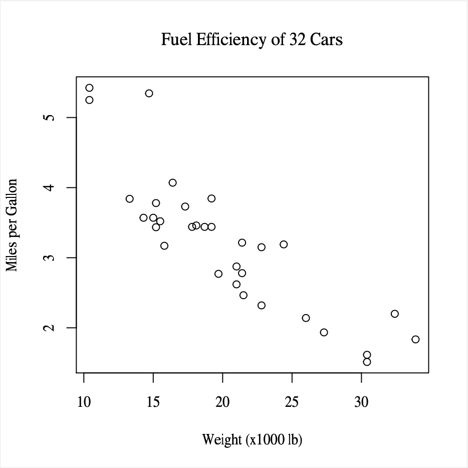
출력된 폰트는 PDF 디바이스 폰트에 등록된 첫번 째 폰트인 “serif”, 즉 실제로는 Times Roman 폰트다.
pdfFonts() %>% names() %>% head(3)## [1] "serif" "sans" "mono"pdfFonts()["serif"]## $serif
## $family
## [1] "Times"
##
## $metrics
## [1] "Times-Roman.afm" "Times-Bold.afm" "Times-Italic.afm"
## [4] "Times-BoldItalic.afm" "Symbol.afm"
##
## $encoding
## [1] "default"
##
## attr(,"class")
## [1] "Type1Font"PDF 디바이스에 추가 폰트를 출력하기 위해서는 반드시 cariro_pdf() 함수를 사용해야 한다.
cairo_pdf("cairo_arrial_narrow.pdf", family = "Arial Narrow", width = 5, height = 5)
plot(mtcars$mpg, mtcars$wt,
main = "Fuel Efficiency of 32 Cars",
xlab = "Weight (x1000 lb)",
ylab = "Miles per Gallon")
dev.off()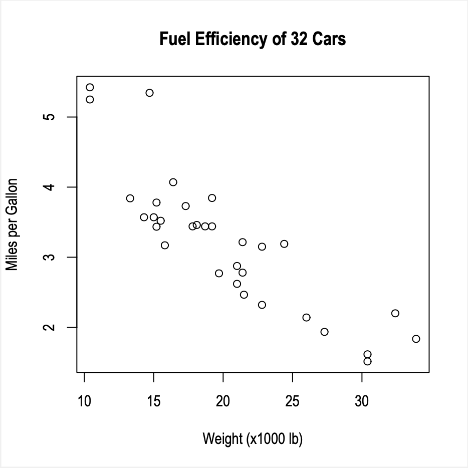
한글 추가 폰트 출력하기
한글이 포함된 플롯을 네 가지 방법으로 PDF 디바이스로 내보낸다.
폰트 패밀리를 지정하지 않고, pdf() 함수를 사용하면 한글이 출력되지 않는다. 그러나 같은 방법으로 “Korea1deb” 폰트 패밀리를 지정하면 한글이 정상적으로 출력되지만 함께 출력되는 영문 문자의 배열이 흐트러져 이상하게 출력된다.
cairo_pdf() 함수에서는 PDF 디바이스의 기본 폰트인 “Korea1deb” 폰트 패밀리를 인식하지 못한다. 그러나 추가 폰트인 “NanumGothic”는 정상적으로 잘 출력된다. 그러므로 추가 폰트를 사용한 경우에는 네번 째 방법을 이용한다. 플롯의 비교를 위해서 출력된 PDF 파일을 2 \(times\) 2 구조로 배열 해 보았다.
PDF 디바이스의 기본 폰트인 “Korea1deb” 폰트 패밀리가 Cairo PDF 디바이스에 적용되지 않는 것처럼, 윈도우 디바이스에서도 사용할 수 없다. 왜냐하면 PDF 디바이스 전용 폰트이기 때문이다.
pdf("font_test1.pdf", width = 5, height = 5)
plot(mtcars$mpg, mtcars$wt,
main = "pdf(), no font family\n 한글 출력 테스트",
xlab = "Weight (x1000 lb)",
ylab = "Miles per Gallon")
dev.off()
pdf("font_test2.pdf", family = "Korea1deb", width = 5, height = 5)
plot(mtcars$mpg, mtcars$wt,
main = "pdf(), Korea1deb font family\n 한글 출력 테스트",
xlab = "Weight (x1000 lb)",
ylab = "Miles per Gallon")
dev.off()
cairo_pdf("font_test3.pdf", family = "Korea1deb", width = 5, height = 5)
plot(mtcars$mpg, mtcars$wt,
main = "cairo_pdf(), Korea1deb font family\n 한글 출력 테스트",
xlab = "Weight (x1000 lb)",
ylab = "Miles per Gallon")
dev.off()
cairo_pdf("font_test4.pdf", family = "NanumGothic", width = 5, height = 5)
plot(mtcars$mpg, mtcars$wt,
main = "cairo_pdf(), Korea1deb font family\n 한글 출력 테스트",
xlab = "Weight (x1000 lb)",
ylab = "Miles per Gallon")
dev.off()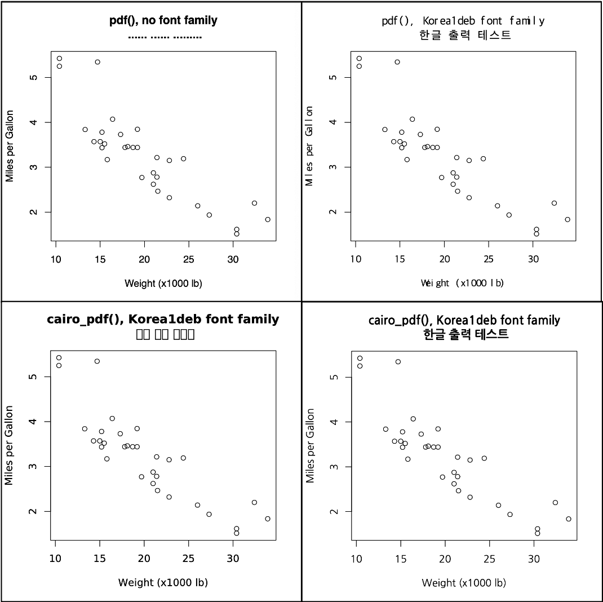
ggplot2 플롯도 동일한 방법으로 비교해 본다. ggplot2 플롯 사례에서도 동일한 결과가 나타난다.
p <- ggplot(mpg, aes(class)) +
geom_bar(fill = "steelblue", alpha = 0.5) +
labs(title = "pdf(), no font family\n 한글 출력 테스트", y = "Frequency")
ggsave("ggplot_korean1.pdf", p, width = 5, height = 5)
p <- ggplot(mpg, aes(class)) +
geom_bar(fill = "steelblue", alpha = 0.5) +
labs(title = "pdf(), Korea1deb font family\n 한글 출력 테스트", y = "Frequency") +
theme(text=element_text(family = "Korea1deb"))
ggsave("ggplot_korean2.pdf", p, width = 5, height = 5)
p <- ggplot(mpg, aes(class)) +
geom_bar(fill = "steelblue", alpha = 0.5) +
labs(title = "cairo_pdf(), no font family\n 한글 출력 테스트", y = "Frequency") +
theme(text=element_text(family = "Korea1deb"))
cairo_pdf("ggplot_korean3.pdf", width = 5, height = 5)
p
dev.off()
p <- ggplot(mpg, aes(class)) +
geom_bar(fill = "steelblue", alpha = 0.5) +
labs(title = "cairo_pdf(), no font family\n 한글 출력 테스트", y = "Frequency") +
theme(text=element_text(family = "NanumGothic"))
cairo_pdf("ggplot_korean4.pdf", width = 5, height = 5)
p
dev.off()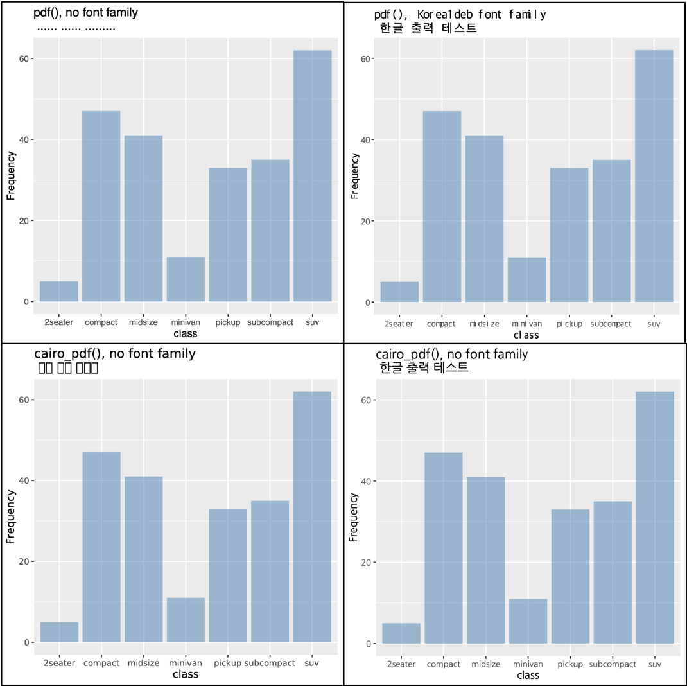
ggplot 플롯은 ggsave() 함수로 외부 파일로 내보낼 수 있다. 이중 PDF 디바이스로 내보내는 다음 예제도 pdf() 함수를 사용하는 것과 같은 결과를 얻는다. 그 이유는 ggsave() 함수가 pdf() 함수를 랩핑했기 때문이다. 그러므로 추가 폰트를 사용한 ggplot 플롯은 ggsave() 함수를 사용하지 말고 cairo_pdf() 함수를 사용해야 한다.
ggsave("pmg_arrial_narrow.pdf", plot = p_arial_narrow, family = "Arial Narrow",
width = 6, height = 4)PDF 디바이스에 폰트 포함하기
만약에 PDF 디바이스로 출력된 폰트가 없는 사용자에게 PDF 파일을 공유하면, 파일을 공유받은 사용자의 환경에 해당 폰트가 없어서 파일의 출력에 문제가 발생할 수 있다. 그래서 다음처럼 PDF 디바이스 파일에 폰트를 포함하기도 한다.
embed_fonts("ggplot_korean4.pdf", outfile = "ggplot_korean4_emb.pdf")두 파일의 용량을 비교해보면 폰트를 포함한 PDF 파일의 용량이 다소 크다.
system("ls -al ggplot_korean4*", intern = TRUE)## [1] "-rw-r--r--@ 1 choonghyunryu staff 13825 Feb 3 23:52 ggplot_korean4.pdf"
## [2] "-rw-r--r-- 1 choonghyunryu staff 15348 Feb 4 00:08 ggplot_korean4_emb.pdf"마무리 하며
dlookr 패키지의 최초 마이너 버전 업그레이드의 가장 큰 특징은 ggplot 플롯에 추가 폰트인 Arial Narrow 폰트를 사용한 점이다. 이 작업을 진행하면서 발생했던 이슈들을 정리해 보았다.
혹자에게는 복잡한 작업이 필요치 않을 수 있지만, 한글을 사용하는 우리의 R 사용자는 반드시 한글 출력 문제에 부딪칠 수 밖에 없는 숙명이 있다. 어찌 정리하다보니 길어졌다. 많은 이야기를 쏟아내다보니 산만하고 복잡해진 감이 없지 않다. 그러나 이 기회에 한글 출력을 확실하게 해결하리라는 바램으로 글을 마친다.